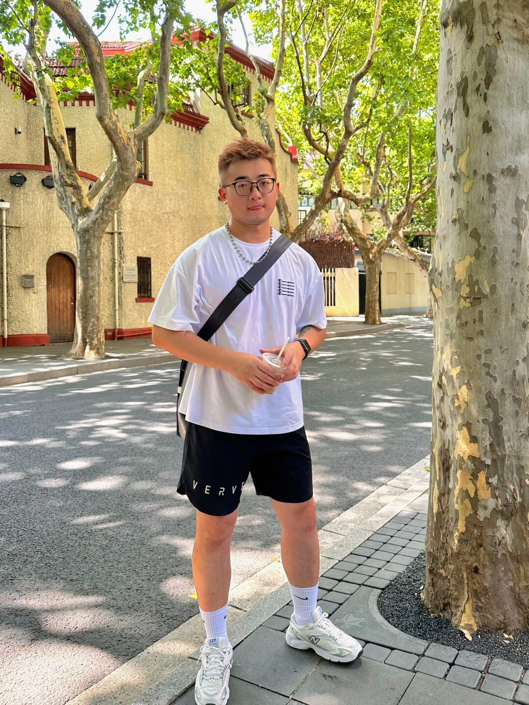

第 1 张 / 共 6 张
直觉
这张有很典型的夏日 cityboy 日常感：树荫、街道、白 T 和咖啡都很轻松。最舒服的是斑驳光影，但人物脸部被树影和背景稍微“吃掉”，主体存在感还可以再加强。
技法拆解
- 构图用竖幅全身，适合小红书穿搭记录，但人物略居中偏满，头顶和脚下空间可再精细。
- 右侧树干形成前景框架，有街拍感，但占比稍大，会分散视线。
- 光线是强烈夏日顶光加树荫，氛围好，但白 T 容易过曝，脸部也容易不均匀。
- 背景建筑和树影有上海街区味道，建议用更大光圈或更长焦距压一压背景，让人更突出。
实拍操作（佳能 R10）
模式拨盘选 Av 光圈优先，因为这类日常人像重点是控制景深和背景虚化，曝光交给相机更快。推荐 f/2.8-f/4，1/500s 以上，ISO 100-400，评价测光，人眼检测 AF，伺服 AF，区域选全区域或灵活区域。镜头建议 RF-S 18-150mm 拉到 50-85mm，或 RF 50mm F1.8 拍半身/全身更有虚化。现场先让人物站在完整阴影里，避开脸上碎光；摄影师退后用中长焦拍，人物微侧身、手拿咖啡；等背景无人、树影好看时连拍 2-3 张。
后期思路
整体往“小红书夏日清爽”走：提高亮度和阴影，压一点高光保护白 T。色彩可让绿色偏黄一点、肤色提亮，适度加暖色温和清晰度；用径向滤镜轻微提亮人物，背景略降饱和，突出少年感。